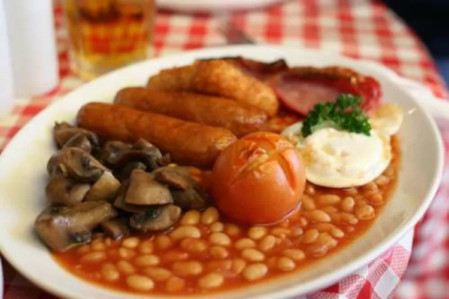

Full English Breakfast

Description
Nothing beats a full English breakfast. Whether you have a long day ahead of you outdoors, a day in the office or are preparing yourself for a lazy Sunday, this breakfast is for you.
Easy to make, even easier to eat - enjoy with plenty of ketchup and brown sauce!
Ingredients
- Pork Sausage Patties
- Tomato
- Butter
- Bacon
- Frozen hash browns, thawed
- Sliced Fresh Mushrooms
- Baked Beans
- Egg
- Bread
- Salt and Ground Pepper
- Fresh parsley
Steps
- Preheat the oven to 425 degrees F (220 degrees C).
- Brown the sausages on all sides in a frying pan over medium heat for 5 minutes. Transfer to a baking dish.
- Bake the sausages in the preheated oven for 10 minutes.
- Score a cross into the bottom of the tomato and place, cross-side up, in the baking dish with the sausages.
- Bake the sausages and the tomato for 10 minutes. Turn off the oven, but do not remove the sausages and tomato.
- Meanwhile, in the frying pan used to brown the sausages, melt 1 tablespoon of butter and fry the bacon, hash browns, and the mushrooms over high heat until the mushrooms have softened, the bacon begins to crisp, and the hash browns turn golden, about 7 minutes. Transfer to the oven to keep warm.
- Pour beans in a small saucepan and cook, stirring frequently, over medium heat until heated through.
- Crack egg into a skillet over medium heat. Cook until outer edges become opaque, about 1 minute. Cover, reduce heat to low, and cook until whites are completely set, about 4 minutes.
- Toast bread and spread remaining butter over.
- Bring together the sausages, hash browns, bacon, beans, tomato, mushrooms, fried egg, and toast on a warm serving plate. Season with salt and pepper, garnish with parsley, and serve immediately.